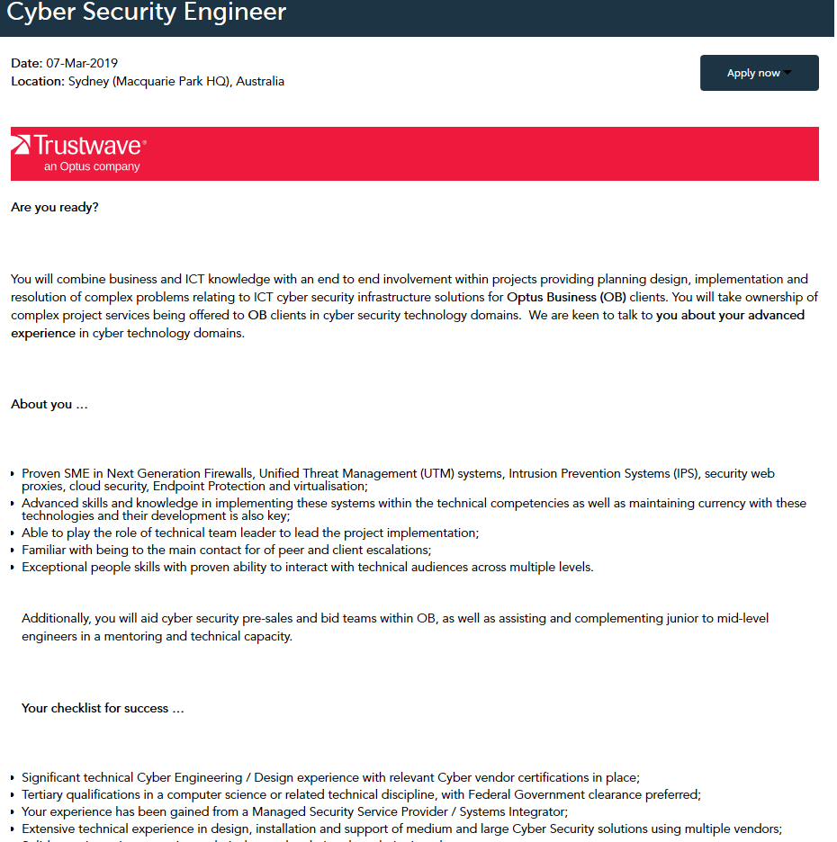
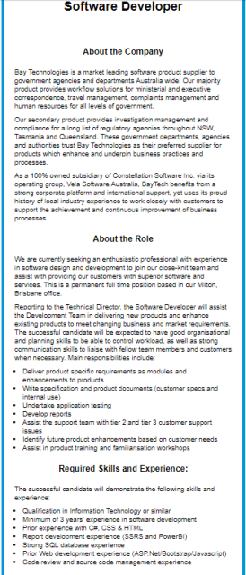

Bois

Team Introduction/Profiles.
John Hegarty

My name is John Hegarty my student ID number is s3795094 my student email is s3795094@student.rmit.edu.au Born and raised in Australia, with a slight touch of german passed down from my great grand father. Finished Year 12 Back in 2007, Past Jobs Ex Australian Army cook Then discharged and moved onto plumbing which is my current occupation. My favourite sport’s is soccer, I grew up playing Rugby league up until 25 then I made the switch to Football,Most of my spare time is mainly revolved around soccer, currently play for Bayside united in QLD. My biggest sport idol would be Cristiano Ronaldo without a doubt I have been an avid fan since he was 18 playing at Manchester United.
Interest in IT:
My interests in IT began around the age of 10 when I found a 2D game by the name of RSC ( Runescape Classic ) it made me always ask myself on how the inner working’s of the game worked, from the client logging to level skill’s, to being on the highscores for skills I had been training for those my hours per day as child. I have never have the chance to act on my love for it and now I have the chance to chase a career that I have been so eager to enter for so long. My interest in IT are Back-end or Front-end development, I know basic's of some programming languages and now Im back studying to expand my knowledge along with learning and excelling at new technologies and allow myself to be creative at problem solving and learning new/advanced languages. I chose RMIT after alot of forum hoping and google searches etc, I visit whirlpool forums often and started digging around to find out how RMIT was run, Trying to find how efficient the College was, were people happy with how it was run and classes were taught. And I have to say 90% of the people posting or adding inputs about RMIT as a college were great which lead me to applying. Im extremely eager to learn about coding, coding has always be fascinating to me, how some can create such programs and a device is able to run those pieces of complex code. Along side coding I'm also hoping I can learn about databases (SQL) as they go hand in hand along with self learning for optimal growth and least to say I'm extremely excited to see where my study and self learning leads me too.
John Azzam
I am 22 years old and I am from South East Melbourne. I was born in Melbourne; however, my parents are from the middle east, I’m am married to a beautiful Spanish woman. So naturally I speak English, Arabic and Spanish! For work, I am a sales manager of a high performing retail telecommunications environment with Monash University. I started in telecommunications and now I have worked my up. My work is where my interest for I.T. has come from. Which is why I decided to go back to study my first degree. I am a very boring person. Although but my friends say I’m the happiest man alive. Along with, an interesting fact about myself is that I love to Barbeque food (low ‘n slow over minimum 8 hours). I do love dogs more than anything, but I’m having a little trouble convincing my wife to let me buy one.
Interest in IT:
My interest in IT first began when I was a kid, approximately 12 years old… I never liked dial up internet so It always put me off growing up as a kid. Until one day, my cousin was coming to live with us from Canada, so he could complete a Master of Information Technology majoring in software development. This man changed my entire life. He came in and as a curious 12-year-old I always hung around with him and wanted to learn everything he knew. It started by showing how to fix dial up when it goes down. Then it led into adsl1 and how the there are different types of internet infrastructure (helped me a lot when it comes to my current job). Then he taught me how to use torrents and how to use photoshop, what computer parts were like a CPU and Ram… The list went on. Although, he never taught me programming. Once he left and went back to Canada I started to learn new things through YouTube and I would talk to friends at school about the things we could do. It came to one day in year 9 in high school. Using CMD, a friend and I shut down the entire network at school… Wasn’t a good idea – I was suspended from school and that’s where my interest was lost. Years later I started working in telecommunications and I never cared about the communications side of things, but it made me want to learn more and grow in my IT knowledge from networking, database systems, ethical hacking to everything and this is where I start. I have no formal experience, but YouTube has taught me a lot about networking, software development and IT in general. It is now that I am ready to become an IT professional and want to learn software development to begin with, so I can follow in his steps.
Andrei Josh Arabit
I'm from Melbourne, Australia. My email is s3663902@student.rmit.edu.au, I am a Full-time student and a Part-time worker I Enjoy music and gaming, Interesting fact: I drive a manual transmission vehicle :).
My interest in Information Technology is that it is a broad subject containing many topics that can be learnt to adapt different skills and experiences. Information Technology isn’t only about “computers” or “networking” it is also about learning and identifying problems internally or externally in order to maintain information systems error free. In years 9 to 11 in secondary school I chose to study I.T. In which I gained basic knowledge on information technology followed by developing websites as an assignment. I have had a long interest in I.T however coming out of high school I chose to take a path to have a future career in the Business sector. 4 years have now past and I have decided to re-route into I.T hoping it will give me new knowledge and skills in thefuture. Being a student in RMIT currently, I did not have to change Universities making it an easy process to enrol into this course. I chose to stay with RMIT as throughout my years of being an undergraduate I have had a positive experience with the overall environment, students, lecturers and tutors. Based at the Melbourne CBD campus, it was an easy route to get to from home, also with it being based in one of the main streets of Melbourne. While studying I.T, I’d like to gain and acquire knowledge in how to program and develop websites which require coding at an intermediate level. Being able to identify syntax problems and correcting it in minimal time ensuring all codes run well. I would have hope to also learn the fundamentals of Information Technology and its topics, gaining a general insight for what could potentially be applied when in the IT sector of the workforce.
Daniel Day

Hi Everyone,my name is Daniel Day I am a student at Royal Melbourne Institute of Technology currently studying Bacheor of I.T. online, I'm from Rockhampton in Queensland, Some of my personal interests are Online Gaming, Powerlifting, Surfing and 4x4.
Interest in IT:
I have had an interest in IT for a long time mainly through just general activities on the computer Online Gaming, Video editing and just being online but now my interest is a career in IT so looking online i started to research a little about IT qualifications and decided to start my Bachelors in IT through google and ads on TV, youtube etc. I found RMIT through Open Universities Australia.
Callum Morvic
My names is Callum Movric. My Student ID is S3793995 and my Student email is S3793995@student.rmit.edu.au. I was born in Tasmania and have lived there for most of my life. I am currently living in Victoria. I left year 12 early and now I am doing a IT and programming course so I can become degree admitted and start a bachelor in IT or Computer Science. I am currently working part time at officeworks. I used to spend all of my spare time playing Counter-Strike Global Offensive but now I spend my time learning to skate, listening to music, and watching youtube.
Team Personalities.
Personal Profile: Daniel Day
Results with links to the pages to try the tests for yourself.
Myers-Briggs style test.

Learning style test.

Creativity test.

The results show that I am an introvert but have a strong personality, I am proactive, and avidly pursue one's interests, I have the courage to express one's views, i can adapt well to see other point of views in a team and can take the lead when necessary, I am a visual learner i like to watch and learn.
Personal Profile: Callum MovricAfter taking the Educationplanner.org "Whats your Learning Style?" test. I found out that I am mainly a auditory learner.
I find this very interesting because I took a similar test to this in grade 7 which is roughly 6 years ago.
The results I got from that test was that I was a visual learner more than anything else.
-Auditory: 40%
-Visual: 35%
-Tactile: 25%
Campainer ENFP-T is what I got after completing the personality test from 16personalities.com.
I found the test to be very accurate in that I am Extroverted (67% percent to be exact).
The results continue to speak truths about how interact with my colleagues.
The article explains that I view colleagues as friends, people who I show genuine interest in and care for.
I find this so accurate as I enjoy spending time with people at work.
Personal Profile: John Hegarty
Results with links to the pages to try the tests for yourself.

The results on the test’s to me were no surprise, as the 16 personalities test shows I am introvert which is 100% accurate, as this is no shock to me INTP like to work alone or in small groups, but they can be very hands on and extremely open minded but blunt as the same-time. After doing these test’s I believe I like to be challenged, We are often drawn to people who engage in intellectual conversations and always looking to push our selves to be best we can be, we are also extremely independent and we best work in small groups. With that in mind I would look for groups that are small and intellectual a little more on the shy/quiet side as this is what is what is best suited for an INTP as work like to be independent and keep to our own.
Personal Profile: Andrei Josh ArabitResults with links to the pages to try the tests for yourself.
The results shown above are a general outcome of who I am currently. Based off the answers I have chosen from the specified questions, work best individually and if in a team I will work catering towards teammates to ensure the outcome is achieved without conflict. When in a team, I would not be delegating tasks, more so find ways to assist team members to accomplish their task. With these results, it will influence my behaviour in a positive way. I will be able to focus a lot on my own work when in a team, not merely on pleasing other team members or causing conflict. Focussing on the finished product I will always ask team members if they need any assistance or anything else that needs to be done. Being the person I am, I will try my best to communicate and engage in all group activities. Participation is key in group projects and it is ideal for everyone to put in even efforts of work.
Personal Profile: John AzzamTest results:
Myers-Briggs test results:
My personality type is a campaigner. I am extroverted, intuitive, make decisions based on feeling, prospecting and assertive.
(NERIS Analytic Limited 2019)
Learning style test:
My learning style is visual, I am 100% and auditory is biggest weakness.
(Pennsylvania Higher Education Assistance Agency 2011)
My creativity results:
I am below average in creativity being my strongest creative suit is in complexity.
(Aulive 2019)
What do the results of these tests mean for you?
These results mean to me that I have very specific requirements to be 100% engaged and adaptable. The Myer-Briggs results suggest I am very outgoing and can lead a team quite well, making decisions on my gut feeling that lets me be more connected to the people I work with. Which in par, lets me manage and work together in groups to achieve success. Although, my learning style is predominantly visual, over anything else, I do find this correct and that I often need to see things being down before I can understand them to the fullest extent . This needs to be through emailing or any visual que. The third test I chose to do was my creativity test. The results that returned from the creativity test suggested that I am not very creative, but I lean more towards the complexity and problem-solving side being more hands on and less creative in general life and work. These three tests have outlined the positives and negatives for me. This leaves me a position where I can actively cater for my learning needs to be 100% successful and efficient.
The Big Five Personality Test - The Big Five Personality Test | A Free, Scientific Assesment of Your Personality Traits
Myers-Briggs Indicator Test - The Myers&Briggs Foundation
16 Personalities Test (Online) - 16personalities.com (Modified MBTI Based Test)
Characteristics information - The Myers&Briggs Foundation
Education Planner Learning Styles Test - educationplanner.org
Ideal Jobs
Ideal Job: Daniel Day
Click the link for more information.

I think an ideal job would be one to start my career off while still learning and just breaking into the IT job scene, this job require low end troubleshooting and technical support, I should have learned this content by the time i am finishing my bachelors and starting to look for jobs, I think it would be a good starting point to learn more and have time to explore other IT intrests.
Ideal Job: Andrei Josh ArabitA Computer Technician’s role in a company is to ensure all computing hardware and programs have no issues and are running smoothly on a daily basis, followed by setting up computing equipment in new buildings and workplaces. What makes this job appealing to me is that it is both a hands-on and theoretical job in the I.T department. I also enjoy building and setting up computers with also finding the solution to problems in a computer internally or externally for it to be repaired. The typical skills of becoming a computer technician can be found and learned off internet sites such as; Youtube. Many tutorials for all skill segments and problem fixes can be watched and applied to gain skill and experience. There are qualifications for this job, however having a strong knowledge on information technology and computer systems is highly encouraged to make the job less stressful in times. With skills learnt from previous classes of information technology, I have found an interest in wanting to learn more about computer technology and I.T. By building my own personal computer and encountering errors, I have learnt that building and setting up a PC can be difficult without having a general knowledge and watching tutorial’s. I plan to obtain more skills towards this job as I am currently undertaking this course (Bachelor of Information Technology) to ensure I have gained more knowledge and experiences prior to working within the IT sector of the workforce. There is so much to know about IT which is great as there are many categories which fall into IT, computing and system hardware.
Ideal Job: Callum MovricMy ideal Job is a software engineer/developer. I have a lot of different career paths I am interested in, but all of them revolve around being a software engineer or developer. I have a dream career in video game development, specifically creating my own engine. I would love to create a team of like minded people working towards the same goal, creating a story and world full of exploration. I would be working with pre-built software (commonly know as "engines") using C/C++ and API's making sure that idea's and concepts transition into the game smoothly.
Ideal Job: John AzzamClick the link for more information.
Description:
The position that I have listen as my ideal job is a Cyber Security Engineer within OPTUS. This position is a problem-solving position
that incorporates the companies changes as the company moves forward in their 15 different systems. With the telecommunications
industry always changing and the threat of different technologies and integration of AI it is evident that there will always be complex
issues that need solving and this job is for problem solvers. This position attracts me to want to apply for it because its complex.
I am someone who love a challenge and this position is for a problem solver. I have seen first hand that complexity
that OPTUS and their systems are baggage with. In this position I know that I will not get bored and I will work on complex
matters of implementation, change and security. The company has invested millions in their infrustructure, systems,
security and new developing technology and within this position I will always be learning and working hard.
Skills, Qualifications and experience required:
-Tertiary qualification in Computer science or relative field: I will complete a Bachelor of Information Technology majoring in software development.
Once completed I will ask for credits transferred into a Bachelor of Computer science and complete the cs degree.
-Work experience in security service providers with different experience in Cisco, FireEye, Checkpoint and Fortinet: this is experience
in the field to learn how to manage security in systems that’s in a specialised field with service providers.
I will gain this experience through two different ways – OPTUS Graduate program or work for a smaller telco in the same role to gain
the experience needed.
-Experience with design, install and support of SME: This skill is just looking a what the company needs and then implementing the technologies
while working with the providing vendors. I will learn the theory within my course with RMIT and then while in a position with SME
I will gain understanding of how their business systems are implemented and I will gain the appropriate knowledge to complete this.
Click the link for more information.
IThis would be my ideal job as it has a wide range of of IT aspects and greatly suites the career I wish to be in. As I wish to be software developer this job seems to be extremely satisfying as there are many different aspects from HTML and CSS to building applications and the design and the infrastructure for project’s. To gain such a position it would require a number of years within the IT sector, along with a Qualification in IT, and web development and database knowledge, reviewing and testing source code and Develop report testing for applications that have be requested. As of current I have no qualifications in this current field, hence under-taking Uni at RMIT so that I am able to obtain the knowledge that can lead my into the job I wish to see myself in. To obtain these skills it will take 3 - 5 years of not only Uni but self learning and teaching as IT is always evolving this are changing on a daily basis. It may also require for teaching for more in-depth skills such as more advanced coding and database infrastructure.